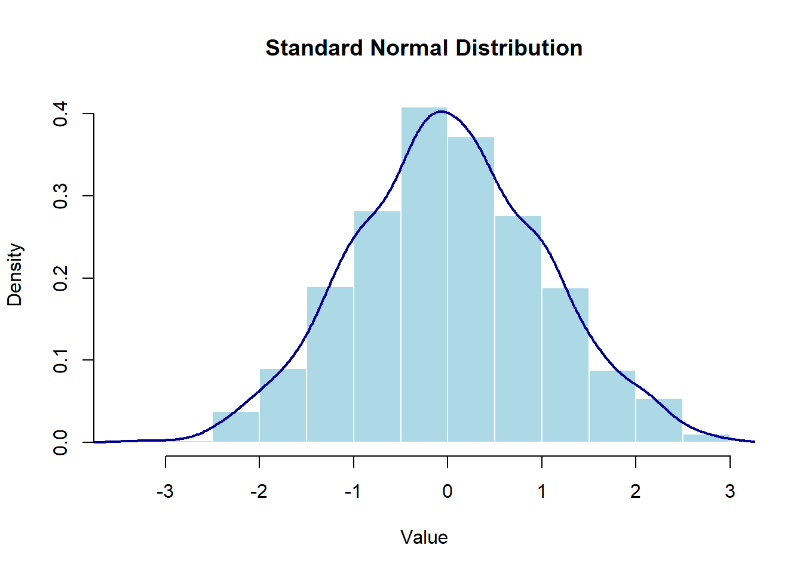
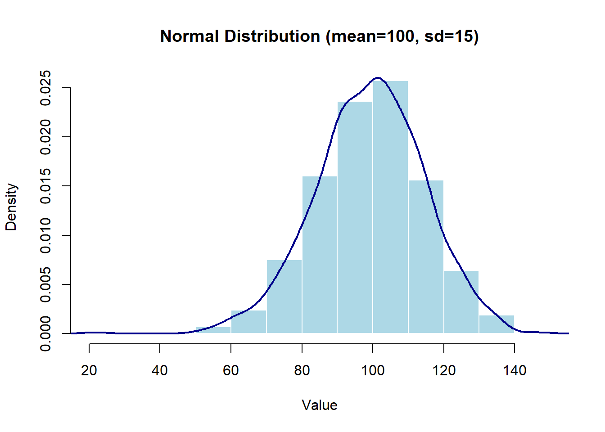
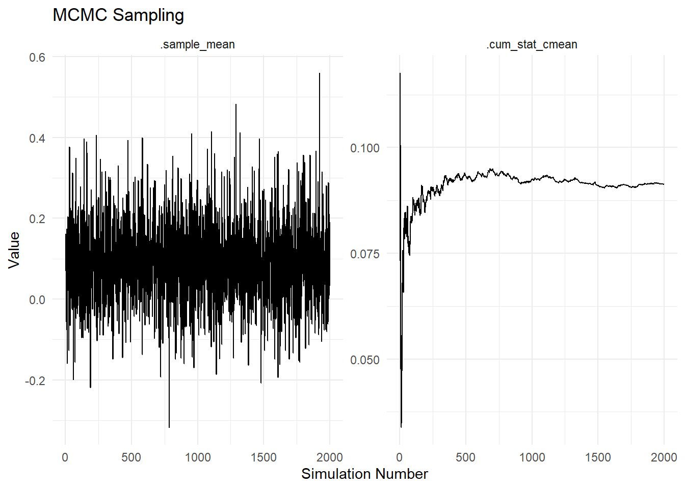
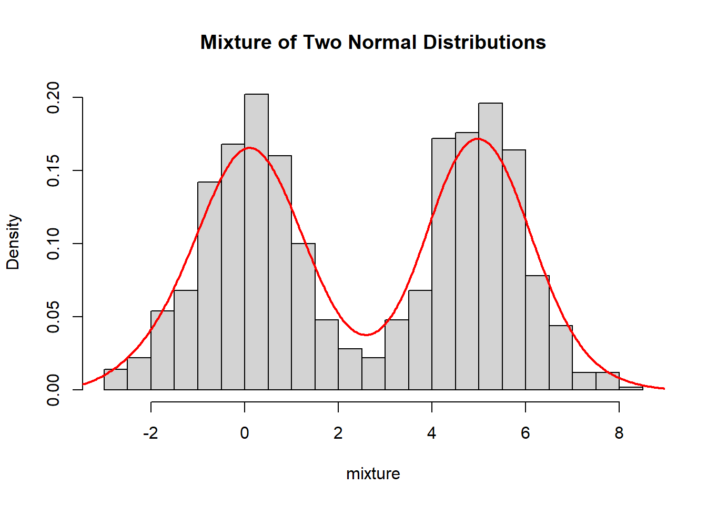
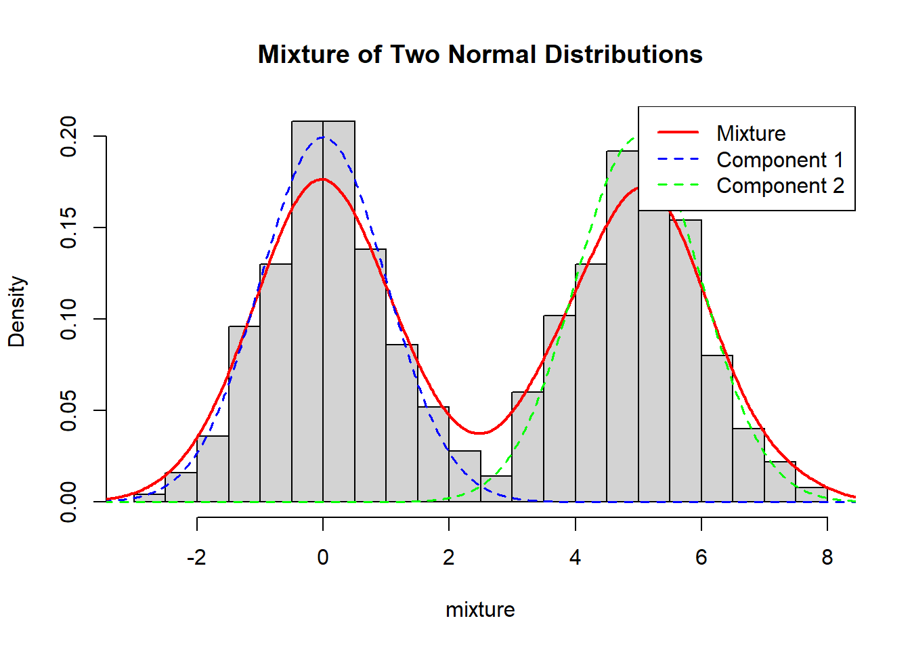
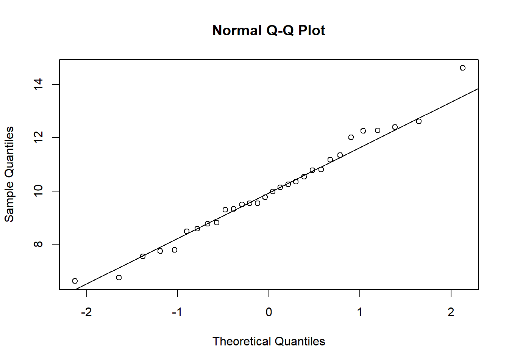
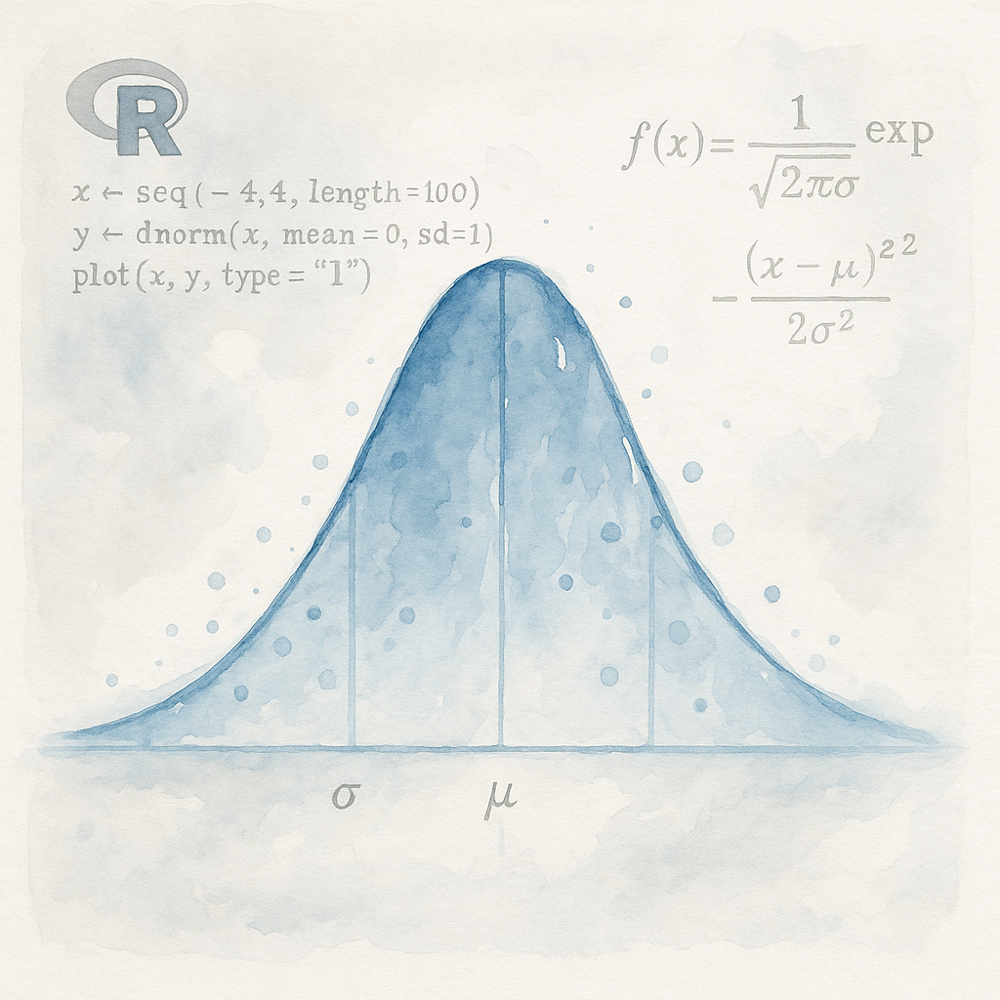

# Standard normal distribution
rnorm(10) [1] -0.6034933 0.0570314 -1.4114139 -1.4458639 0.1759349 1.3702679
[7] 0.7680125 0.5288952 -0.9041921 0.2244687Steven P. Sanderson II, MPH
June 23, 2025
Programming, Normal Distribution in R, rnorm() function, TidyDensity package, Statistical Analysis in R, Random Number Generation, Parameter Estimation in R, Visualizing Normal Distributions, Hypothesis Testing with R, AIC for Normal Distribution, Tidy Data in R, How to generate a normal distribution using rnorm() in R, Visualizing normal distributions with TidyDensity in R, Estimating parameters of a normal distribution from data in R, Using AIC to evaluate normal distribution fits in R, Step-by-step guide to statistical analysis with normal distributions in R
This guide covers normal distribution generation in R using the base
rnorm()function and the TidyDensity package’s specialized functions. You’ll learn each function’s syntax, parameters, and practical applications with code examples and visualizations.
Normal distributions are among the most commonly used probability distributions in statistical programming. R offers several methods to generate, analyze, and visualize normal distributions, from the base rnorm() function to specialized tools in the TidyDensity package. This guide walks through these functions with practical examples to help you incorporate normal distributions in your R workflows.
rnorm() FunctionThe rnorm() function is R’s built-in method for generating random numbers from a normal distribution. It’s part of base R and requires no additional packages.
| Parameter | Description | Default | Required |
|---|---|---|---|
n |
Number of observations | None | Yes |
mean |
Mean of the distribution | 0 | No |
sd |
Standard deviation | 1 | No |
Generate 10 random values from a standard normal distribution (mean=0, sd=1):
[1] -0.6034933 0.0570314 -1.4114139 -1.4458639 0.1759349 1.3702679
[7] 0.7680125 0.5288952 -0.9041921 0.2244687Generate values from a normal distribution with specified parameters:
Here’s how to generate and visualize two normal distributions with different parameters:
# Generate and plot standard normal distribution
std_normal <- data.frame(value = rnorm(1000))
hist(std_normal$value, prob=TRUE, main="Standard Normal Distribution",
xlab="Value", col="lightblue", border="white")
lines(density(std_normal$value), col="darkblue", lwd=2)
# Generate and plot normal with mean=100, sd=15
custom_normal <- data.frame(value = rnorm(1000, mean=100, sd=15))
hist(custom_normal$value, prob=TRUE, main="Normal Distribution (mean=100, sd=15)",
xlab="Value", col="lightblue", border="white")
lines(density(custom_normal$value), col="darkblue", lwd=2)
The TidyDensity package extends R’s capabilities with functions that generate tidy data structures for normal distributions and provide additional utility functions for analysis.
tidy_normal() FunctionThe tidy_normal() function generates random samples from a normal distribution and returns them in a tidy tibble format with additional information .
| Parameter | Description | Default |
|---|---|---|
.n |
Number of random points | 50 |
.mean |
Mean of the distribution | 0 |
.sd |
Standard deviation | 1 |
.num_sims |
Number of simulation runs | 1 |
.return_tibble |
Return as tibble? | TRUE |
# A tibble: 50 × 7
sim_number x y dx dy p q
<fct> <int> <dbl> <dbl> <dbl> <dbl> <dbl>
1 1 1 -1.26 -3.36 0.000390 0.104 -1.26
2 1 2 0.559 -3.22 0.00106 0.712 0.559
3 1 3 -1.63 -3.08 0.00260 0.0514 -1.63
4 1 4 1.67 -2.94 0.00574 0.953 1.67
5 1 5 1.12 -2.80 0.0115 0.869 1.12
6 1 6 -0.0232 -2.67 0.0207 0.491 -0.0232
7 1 7 -0.0430 -2.53 0.0342 0.483 -0.0430
8 1 8 1.28 -2.39 0.0517 0.900 1.28
9 1 9 -1.67 -2.25 0.0724 0.0472 -1.67
10 1 10 0.217 -2.12 0.0949 0.586 0.217
# ℹ 40 more rowsHere’s a visualization of data generated using tidy_normal():
The tibble returned by tidy_normal() includes:
sim_number: Simulation identifierx: Index of the generated pointy: The randomly generated valuedx, dy: Density values from stats::density()p: Cumulative probability (pnorm)q: Quantile value (qnorm)This structure provides a comprehensive dataset for analysis and visualization in a single function call.
util_normal_param_estimate()The util_normal_param_estimate() function estimates normal distribution parameters from a numeric vector of data .
| Parameter | Description | Default |
|---|---|---|
.x |
Numeric vector | Required |
.auto_gen_empirical |
Generate empirical data comparison? | TRUE |
# Estimate parameters from mtcars mpg data
x <- mtcars$mpg
output <- util_normal_param_estimate(x)
output$parameter_tbl# A tibble: 2 × 8
dist_type samp_size min max method mu stan_dev shape_ratio
<chr> <int> <dbl> <dbl> <chr> <dbl> <dbl> <dbl>
1 Gaussian 32 10.4 33.9 EnvStats_MME_MLE 20.1 5.93 3.39
2 Gaussian 32 10.4 33.9 EnvStats_MVUE 20.1 6.03 3.33The function provides parameter estimates using two methods: - MLE (Maximum Likelihood Estimation)/MME (Method of Moments Estimation): Returns the sample mean and standard deviation - MVUE (Minimum Variance Unbiased Estimation): Returns unbiased estimates for the parameters
util_normal_stats_tbl()The util_normal_stats_tbl() function computes a comprehensive set of distribution statistics from a tidy normal distribution tibble .
Rows: 1
Columns: 17
$ tidy_function <chr> "tidy_gaussian"
$ function_call <chr> "Gaussian c(0, 1)"
$ distribution <chr> "Gaussian"
$ distribution_type <chr> "continuous"
$ points <dbl> 50
$ simulations <dbl> 1
$ mean <dbl> 0
$ median <dbl> -0.2635105
$ mode <dbl> 0
$ std_dv <dbl> 1
$ coeff_var <dbl> Inf
$ skewness <dbl> 0
$ kurtosis <dbl> 3
$ computed_std_skew <dbl> -0.03932958
$ computed_std_kurt <dbl> 2.638299
$ ci_lo <dbl> -2.012057
$ ci_hi <dbl> 1.693464The returned tibble includes a wealth of statistics:
util_normal_aic()The util_normal_aic() function estimates normal distribution parameters from data and calculates the Akaike Information Criterion (AIC) .
[1] 208.7555The AIC value helps in model selection when comparing multiple distribution fits to the same data. Lower AIC values indicate better model fit.
Normal distributions are frequently used in simulation studies to generate synthetic data. For example, to simulate experimental results:
Many statistical tests assume normality of the data. You can use rnorm() to simulate control and treatment groups:
# Simulate control and treatment groups
control <- rnorm(30, mean=10, sd=2)
treatment <- rnorm(30, mean=12, sd=2)
# Perform t-test
t.test(control, treatment)
Welch Two Sample t-test
data: control and treatment
t = -3.3845, df = 52.285, p-value = 0.001359
alternative hypothesis: true difference in means is not equal to 0
95 percent confidence interval:
-2.6448455 -0.6761244
sample estimates:
mean of x mean of y
10.16769 11.82818 Estimating parameters of a normal distribution from observed data is a common task in statistical analysis. The util_normal_param_estimate() function provides convenient methods:
# Estimate parameters from data
set.seed(42)
data <- rnorm(100, mean = 2, sd = 2)
params <- util_normal_param_estimate(data)
params$parameter_tbl |>
glimpse()Rows: 2
Columns: 8
$ dist_type <chr> "Gaussian", "Gaussian"
$ samp_size <int> 100, 100
$ min <dbl> -3.98618, -3.98618
$ max <dbl> 6.573291, 6.573291
$ method <chr> "EnvStats_MME_MLE", "EnvStats_MVUE"
$ mu <dbl> 2.06503, 2.06503
$ stan_dev <dbl> 2.072274, 2.082714
$ shape_ratio <dbl> 0.9965041, 0.9915090The util_normal_aic() function helps determine if a normal distribution is appropriate for your data:
The TidyDensity package integrates well with the tidyverse, enabling seamless workflows:
When deciding which function to use for normal distribution generation, consider these differences:
| Feature | rnorm() |
tidy_normal() |
|---|---|---|
| Output type | Numeric vector | Tibble with multiple columns |
| Additional info | None | Density, probability, quantiles |
| Memory usage | Lower | Higher (more data stored) |
| Workflow integration | Base R | Tidyverse-friendly |
| Performance | Fastest | Slightly more overhead |
$mcmc_data
# A tibble: 4,000 × 3
sim_number name value
<fct> <fct> <dbl>
1 1 .sample_mean 0.0732
2 1 .cum_stat_cmean 0.0732
3 2 .sample_mean 0.162
4 2 .cum_stat_cmean 0.118
5 3 .sample_mean 0.0961
6 3 .cum_stat_cmean 0.110
7 4 .sample_mean 0.0711
8 4 .cum_stat_cmean 0.101
9 5 .sample_mean -0.0186
10 5 .cum_stat_cmean 0.0768
# ℹ 3,990 more rows
$plt
Try generating a mixture of two normal distributions in R:
# Generate a mixture of two normal distributions
n <- 1000
mixture <- c(rnorm(n/2, mean=0, sd=1), rnorm(n/2, mean=5, sd=1))
hist(mixture, breaks=30, prob=TRUE, main="Mixture of Two Normal Distributions")
lines(density(mixture), col="red", lwd=2)
# Generate a mixture of two normal distributions
set.seed(123)
n <- 1000
mixture <- c(rnorm(n/2, mean=0, sd=1), rnorm(n/2, mean=5, sd=1))
hist(mixture, breaks=30, prob=TRUE, main="Mixture of Two Normal Distributions")
lines(density(mixture), col="red", lwd=2)
# You can also visualize the component distributions:
x <- seq(-4, 9, length=1000)
y1 <- dnorm(x, mean=0, sd=1) * 0.5 # Scaling by 0.5 for mixture proportion
y2 <- dnorm(x, mean=5, sd=1) * 0.5
lines(x, y1, col="blue", lwd=1.5, lty=2)
lines(x, y2, col="green", lwd=1.5, lty=2)
legend("topright", c("Mixture", "Component 1", "Component 2"),
col=c("red", "blue", "green"), lwd=c(2, 1.5, 1.5), lty=c(1, 2, 2))
rnorm() is the fastest and simplest way to generate random normal values in base Rtidy_normal() creates enhanced tibbles with density, probability, and quantile informationutil_normal_param_estimate() offers multiple methods to estimate distribution parameters from datautil_normal_stats_tbl() provides comprehensive statistics for normal distributionsutil_normal_aic() helps with model selection through AIC calculationThe R programming language provides multiple approaches to generate and analyze normal distributions. Whether you prefer the simplicity of base R’s rnorm() or the comprehensive tibble output of TidyDensity’s tidy_normal() and utility functions, you can easily incorporate normal distributions in your statistical analysis workflows.
For straightforward random number generation, rnorm() is fast and efficient. For more complex analyses requiring additional statistics and tidy data structures, the TidyDensity package’s functions offer integrated solutions that work well within modern R programming paradigms.
Q: How do I generate the same random normal values every time?
A: Use set.seed() before calling rnorm() or tidy_normal() to ensure reproducibility:
[1] -0.56047565 -0.23017749 1.55870831 0.07050839 0.12928774Q: Can I generate multivariate normal distributions?
A: Yes, use the MASS::mvrnorm() function from the MASS package:
Attaching package: 'MASS'The following object is masked from 'package:dplyr':
select [,1] [,2]
[1,] 1.5078037 1.462775985
[2,] 0.7916174 0.006712909
[3,] -0.2616042 -1.929546135
[4,] -0.4047188 -0.784945279
[5,] -0.8454529 0.073543717
[6,] 1.3477594 0.772412452Q: How can I check if my data follows a normal distribution?
A: Use the Shapiro-Wilk test or QQ plots:
Shapiro-Wilk normality test
data: data
W = 0.98244, p-value = 0.8861
Q: What’s the difference between MLE and MVUE parameter estimation?
A: MLE uses maximum likelihood estimation while MVUE provides minimum variance unbiased estimates. For normal distributions, they primarily differ in how they calculate the standard deviation.
Q: How many data points should I generate for accurate simulations?
A: It depends on your purpose, but typically 1,000+ points provide good distribution shape, while sensitive statistical tests might require 10,000+ samples for stability.
R Project for Statistical Computing - Official website for the R programming language.
Normal Distribution in R Documentation - Official documentation for rnorm() and related normal distribution functions.
R Manuals and Documentation - Comprehensive list of all documentation for R functions and packages.
TidyDensity Package on CRAN - Official CRAN page with documentation and vignettes.
TidyDensity Reference Manual (PDF) - Complete reference guide for all TidyDensity functions.
TidyDensity GitHub Repository - Source code and additional documentation.
Happy Coding! 🚀

You can connect with me at any one of the below:
Telegram Channel here: https://t.me/steveondata
LinkedIn Network here: https://www.linkedin.com/in/spsanderson/
Mastadon Social here: https://mstdn.social/@stevensanderson
RStats Network here: https://rstats.me/@spsanderson
GitHub Network here: https://github.com/spsanderson
Bluesky Network here: https://bsky.app/profile/spsanderson.com
My Book: Extending Excel with Python and R here: https://packt.link/oTyZJ
You.com Referral Link: https://you.com/join/EHSLDTL6